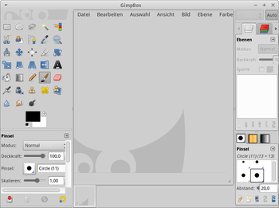

Einzelfenstermodus
Archivierte Anleitung
Dieser Artikel wurde archiviert, da er - oder Teile daraus - nur noch unter einer älteren Ubuntu-Version nutzbar ist. Diese Anleitung wird vom Wiki-Team weder auf Richtigkeit überprüft noch anderweitig gepflegt. Zusätzlich wurde der Artikel für weitere Änderungen gesperrt.
Zum Verständnis dieses Artikels sind folgende Seiten hilfreich:
Ein- und Umsteiger haben oft ein Problem damit, dass sich die Fenster von GIMP bis einschließlich der Version 2.6 nicht zu einer zusammenhängenden Bedienoberfläche zusammenfügen lassen. Jedoch gibt es unter Linux mehrere Möglichkeiten, alle Einzelfenster in einen gemeinsamen Rahmen zu packen. Auf diese Weise kann man alle Fenster auf einmal verschieben oder minimieren, indem man Kommandos auf den Rahmen anwendet. Die Erstellung dieses Rahmens ist recht einfach. Für weitere Möglichkeiten, das Programm an das Look&Feel von Photoshop anzupassen, siehe den Hauptartikel GIMP.
Hinweis:
Ab Version 2.8 kann man unter dem Menüpunkt "Fenster" den Einzelfenstermodus ohne zusätzliche Erweiterungen einschalten.
Bedienelemente ausblenden¶
Bevor man sich die Mühe macht, die im Folgenden beschriebenen Lösungen umzusetzen, kann man ausprobieren, ob nicht das Aus- und Einblenden der Bedienelemente (Docks) mit der Taste Tab ⇆ ausreicht. Beim Drücken dieser Taste muss das Hauptfenster aktiv sein.
GimpBox¶
Bei dieser Methode wird das Skript GimpBox  benutzt, das wie folgt installiert wird.
benutzt, das wie folgt installiert wird.
Abhängigkeiten installieren [1]:
python-wnck
 mit apturl
mit apturl
Paketliste zum Kopieren:
sudo apt-get install python-wnck
sudo aptitude install python-wnck
Dann das Skript herunterladen [2]:
sudo wget http://gimpbox.googlecode.com/hg/gimpbox.py -O /usr/local/bin/gimpbox
Zuletzt das Skript noch als ausführbar markieren:
sudo chmod +x /usr/local/bin/gimpbox
Jetzt kann man GIMP als ein Fenster starten:
gimpbox
 Sollten die Werkzeugfenster nicht in das GimpBox-Fenster einbezogen werden, müssen in GIMP unter "Bearbeiten -> Einstellungen -> Fensterverwaltung" die beiden Felder "Hinweis für den Werkzeugkasten" und "Hinweis für andere Docks" auf "Werkzeugfenster" gesetzt werden.
Optional¶
Man kann den vorhandenen Menüeintrag mit Hilfe eines Menüeditors (oder die Datei /usr/share/applications/gimp.desktop manuell) anpassen. Dazu einfach den Aufruf von
Exec=gimp-2.6 %UinExec=gimpboxändern. Alternativ ist auch das Anlegen eines eigenen Programmstarters [3] möglich.Außerdem kann das Python-Skript nach Belieben mit einem Editor [4] an die eigenen Bedürfnisse angepasst werden.
Xfce¶
Anwendern, die via Xfce bzw. Xubuntu sowieso den Fenstermanager xfwm4 einsetzen, steht eine weitere Lösung offen. Dieser Fenstermanager kann zwar auch unter anderen Desktop-Umgebungen nachinstalliert und genutzt werden, nur ist diese Thematik nicht Inhalt dieses Artikels (Lubuntu-Nutzer können einen Blick in den Artikel LXDE Fenstermanager wechseln werfen).
Zunächst muss man das folgende Paket installieren:
xnest
mit apturl
Paketliste zum Kopieren:
sudo apt-get install xnest
sudo aptitude install xnest
Nun startet man GIMP mit dem Befehl:
Xnest :1 -ac -name GIMP -geometry 1024x690 & xfwm4 --display :1 & gimp --display :1
Die Angaben hinter dem Parameter -geometry legen hierbei die Größe des Rahmens fest, innerhalb dessen sich die einzelnen Fenster-Elemente von GIMP frei anordnen lassen. Den Startbefehl kann man entweder im Terminal ausführen oder mit Hilfe des Menüeditors einen Programmstarter erstellen.
Links¶
GIMPBox: Get A Single-Window Mode In Stable GIMP (2.6.x)
 - WebUpd8, 06/2011
- WebUpd8, 06/2011Gimp in nur einem Fenster mit GimpBox
 - Blogbeitrag, 09/2010
- Blogbeitrag, 09/2010Howto: Run Gimp in one window
- Blogbeitrag, 09/2006GIMP
 Hauptartikel
Hauptartikel
- Erstellt mit Inyoka
-
 2004 – 2017 ubuntuusers.de • Einige Rechte vorbehalten
2004 – 2017 ubuntuusers.de • Einige Rechte vorbehalten
Lizenz • Kontakt • Datenschutz • Impressum • Serverstatus -
Serverhousing gespendet von